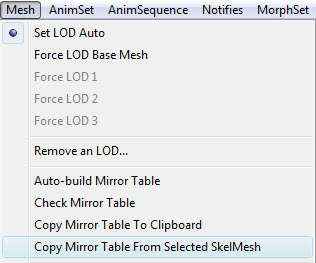

UDN
Search public documentation:
AnimationMirroring
日本語訳
中国翻译
한국어
Interested in the Unreal Engine?
Visit the Unreal Technology site.
Looking for jobs and company info?
Check out the Epic games site.
Questions about support via UDN?
Contact the UDN Staff
中国翻译
한국어
Interested in the Unreal Engine?
Visit the Unreal Technology site.
Looking for jobs and company info?
Check out the Epic games site.
Questions about support via UDN?
Contact the UDN Staff
Animation Mirroring
Overview
In games it is common to need animations that are mirror images of each other. For example, you may need both a 'look to the left' and a 'look to the right' version of the animation. Though it is possible to create both of these animations in a 3D content creation package such as 3DSMax, Maya, etc and then import them into the engine; it is not an ideal situation. This is because sometimes it is desirable to generate these on the fly, as well as mirroring dynamic blends of animations. In order to use this system, it is important that your skeleton is symmetrical.
Setting Up The SkeletalMesh
Before you can use mirroring, you must set up the mirror table in the skeletal mesh. If you open the mesh in the AnimSet Editor, you can find the mirroring settings under the Mesh tab on the right. The first thing to set up is the SkelMirrorAxis, which sets which axis to mirror the skeletal mesh. Note that this is in mesh space; the reference frame that the mesh was authored in, in the 3D content creation package, before RotOrigin is applied. The next thing to set is the SkelMirrorFlipAxis. When you mirror a bone transform, you need to flip one of the axes in order for the bone not to be turned inside out. Which axis is flipped depends on how your skeleton is structured, this setting lets you adjust the default axis to use. You can however override this default per bone in the SkelMirrorTable. Here are a couple of examples of using the flip axis. In the first one, bone 62 is mapped to bone 37 - mirrored, and then the X axis is flipped: In this example, bone 9 is mapped to bone 4 - mirrored and then the X-Axis flipped.
 The most time consuming part of setting up mirroring for a skeletal mesh is setting up the SkelMirrorTable. This table provides information for each bone to map it to another bone. For example, the source for the right knee would be the left knee, and the source for the spine would just be the spine, as this bone is along the center line (assuming a symmetrical mammalian skeletal mesh).
The AnimSet Editor contains a tool for attempting to create this mapping table automatically. Under the Mesh menu, select Auto-build Mirror Table. This will create the table, and try to match bones that are in corresponding positions across the mirror plane when in the reference pose. You must set the SkelMirrorAxis setting before running this tool. The tool normally works quite well for the majority of the body, including legs, arms, fingers etc. However it may have problems if you have multiple bones in the same location, or when there are many bones very close together.
Once the table is created, you can see how things are working by pressing the View Mirrored button on the AnimSet Editor tool bar.
You will usually have to do some fix up work on the auto-generated table to get things perfect. Under the Mesh tab, when you expand the SkelMirrorTable section you should see an entry for each bone in the skeleton. Inside each entry, it shows you the index of the bone it is getting its transformation data from. These must always form pairs; if the source of bone 88 is bone 65, then the source for bone 65 must be 88.
To find which index corresponds to which bone, you can either turn on bone names in the 3D view port, use the Copy Bone Names To Clipboard option in the Mesh menu and paste a listing into a text editor, or in the skeletal tree the bone indexes is in brackets next to the bone it is associated with. You can also adjust the BoneFlipAxis per bone to override the SkelMirrorFlipAxis default.
Bone indexes associated with bones in the Skeleton Tree
The most time consuming part of setting up mirroring for a skeletal mesh is setting up the SkelMirrorTable. This table provides information for each bone to map it to another bone. For example, the source for the right knee would be the left knee, and the source for the spine would just be the spine, as this bone is along the center line (assuming a symmetrical mammalian skeletal mesh).
The AnimSet Editor contains a tool for attempting to create this mapping table automatically. Under the Mesh menu, select Auto-build Mirror Table. This will create the table, and try to match bones that are in corresponding positions across the mirror plane when in the reference pose. You must set the SkelMirrorAxis setting before running this tool. The tool normally works quite well for the majority of the body, including legs, arms, fingers etc. However it may have problems if you have multiple bones in the same location, or when there are many bones very close together.
Once the table is created, you can see how things are working by pressing the View Mirrored button on the AnimSet Editor tool bar.
You will usually have to do some fix up work on the auto-generated table to get things perfect. Under the Mesh tab, when you expand the SkelMirrorTable section you should see an entry for each bone in the skeleton. Inside each entry, it shows you the index of the bone it is getting its transformation data from. These must always form pairs; if the source of bone 88 is bone 65, then the source for bone 65 must be 88.
To find which index corresponds to which bone, you can either turn on bone names in the 3D view port, use the Copy Bone Names To Clipboard option in the Mesh menu and paste a listing into a text editor, or in the skeletal tree the bone indexes is in brackets next to the bone it is associated with. You can also adjust the BoneFlipAxis per bone to override the SkelMirrorFlipAxis default.
Bone indexes associated with bones in the Skeleton Tree
Mirroring tools
In the Mesh menu of the AnimSet Editor, there are a few options to make working with Mirror Tables a little easier. 
Auto Build Mirror Table
This function will attempt to automatically build the mirror table for the current mesh. You can expect to have to do touch up work, but it should give a good foundation to begin. When it finishes, it will also inform you if any errors were found.Check Mirror Table
Will check the mirror table for problems and display a pop up window if anything is found.Copy Mirror Table to Clipboard
Allows to check the mirroring table in a text editor.0: 0 AXIS_NONE 1: 1 AXIS_NONE 2: 2 AXIS_NONE 3: 3 AXIS_NONE 4: 41 AXIS_NONE 5: 5 AXIS_NONE 6: 16 AXIS_NONE 7: 7 AXIS_NONE 8: 8 AXIS_NONE 9: 14 AXIS_NONE 10: 15 AXIS_NONE 11: 11 AXIS_NONE 12: 17 AXIS_NONE 13: 13 AXIS_NONE 14: 14 AXIS_NONE 15: 10 AXIS_NONE 16: 16 AXIS_NONE 17: 12 AXIS_NONE 18: 18 AXIS_NONE 19: 19 AXIS_NONE 20: 20 AXIS_NONE 21: 21 AXIS_NONE 22: 38 AXIS_NONE 23: 39 AXIS_NONE 24: 40 AXIS_NONE 25: 25 AXIS_NONE 26: 42 AXIS_NONE 27: 43 AXIS_NONE 28: 44 AXIS_NONE 29: 45 AXIS_NONE 30: 46 AXIS_NONE 31: 47 AXIS_NONE 32: 48 AXIS_NONE 33: 33 AXIS_NONE 34: 34 AXIS_NONE 35: 51 AXIS_NONE 36: 36 AXIS_NONE 37: 37 AXIS_NONE 38: 22 AXIS_NONE 39: 39 AXIS_NONE 40: 40 AXIS_NONE 41: 41 AXIS_NONE 42: 26 AXIS_NONE 43: 27 AXIS_NONE 44: 28 AXIS_NONE 45: 29 AXIS_NONE 46: 30 AXIS_NONE 47: 31 AXIS_NONE 48: 32 AXIS_NONE 49: 49 AXIS_NONE 50: 50 AXIS_NONE 51: 35 AXIS_NONE
Copy Mirror Table from Selected Mesh.
When meshes share the same skeleton, this is an easy way to copy the mirror table without having to recreate it.Using Mirroring in an AnimTree
Once a SkeletalMesh is set up to use mirroring, it is very straight forward to use in an AnimTree. There is a AnimNode type called AnimNodeMirror which has one input and one output. If you insert one of these in the tree, it will mirror what ever the input animation blend is and output it. In this way you can mirror an individual animation or a blend of animations, and blend between mirrored and unmirrored animations, making transitions much smoother. The bEnableMirroring flag in the AnimNode allows you to toggle the mirroring behavior on or off. Note that mirroring an animation is quite costly, so try to use as few AnimNodeMirrors as possible.